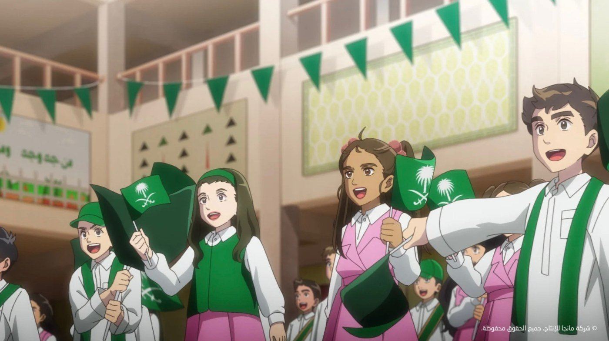
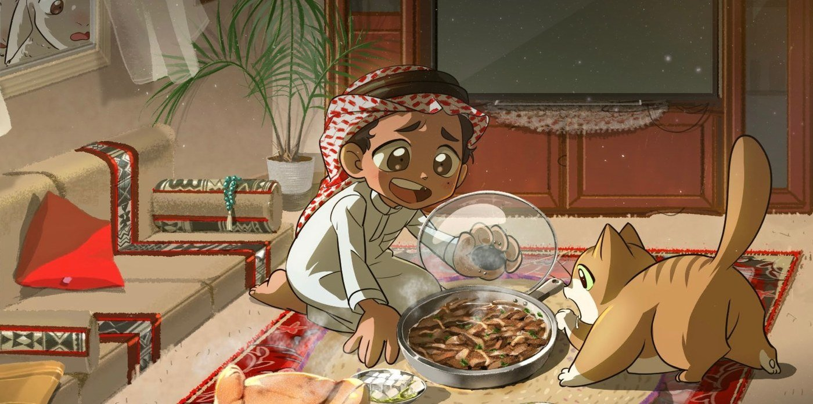
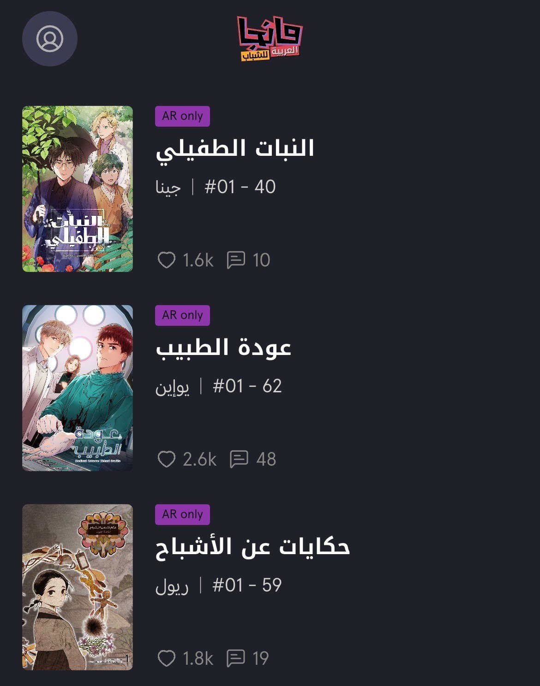

국가 주도로 육성되는 사우디 웹툰·애니메이션 산업
망가 프로덕션(Manga Productions)은 사우디아라비아 비영리 재단 미스크 파운데이션(MiSK Foundation) 산하 콘텐츠 기업으로, 애니메이션·만화·게임 제작과 IP(지식재산권) 개발·유통을 핵심 사업으로 운영하고 있다. 회사는 사우디 비전 2030(Vision 2030)과 연계해 콘텐츠 산업을 국가 미래 성장 산업으로 육성하고 있다.

사우디 건국 95주년 기념 만화 — 출처: 망가 프로덕션(Manga Productions)
망가 프로덕션은 글로벌 콘텐츠 제작 시스템 도입과 현지 청년 인재 양성 등을 주요 목표로 제시하고 있다. 사업 분야는 애니메이션·만화·게임으로 나뉜다. 최근 공개된 2025년 연간보고서에 따르면 사우디 문화와 지역 서사를 기반으로 한 오리지널 콘텐츠 제작에 집중하고 있다. 또한 애니메이션·게임·더빙 분야 교육 프로그램과 워크숍을 운영하며 4,000명 이상의 교육 참가자를 지원했다고 밝혔다. 아랍어 현지화(localization) 역시 주요 전략 가운데 하나다. 회사는 번역, 언어 감수, 게임 내 아랍어 통합, 디지털 플랫폼 적용 등을 포함한 자체 현지화 시스템을 구축했다고 설명했다.

망가 프로덕션 제작 콘텐츠 — 출처: 망가 프로덕션(Manga Productions) 2025년 연간보고서
사우디 플랫폼에 진출한 한국 웹툰과 현지 반응
한편 사우디에서는 망가 아라비아(Manga Arabia)와 같은 아랍어 만화 플랫폼도 성장하고 있다. 망가 아라비아는 사우디 리서치 앤 미디어 그룹(Saudi Research and Media Group, SRMG) 산하 플랫폼으로, 2025년 한국 키다리스튜디오(Kidari Studio)와 브이브로(V-Bros)와 협력해 한국 웹툰의 아랍어 서비스를 시작했다고 발표했다. 공개 작품에는 <메디컬 환생>, <식물인간>, <신기록> 등이 포함됐다.
<식물인간>(글·그림 진아)은 거대 희귀식물 'Z'로 인해 전 세계에 퍼진 재앙 속에서 치료법을 찾기 위해 세계를 떠도는 식물학자들의 이야기를 그린 힐링 판타지 작품이다. <메디컬 환생>(글·그림 키다리스튜디오)은 실패한 외과 의사 김진현이 중학생 시절로 돌아가 새로운 삶을 살아가는 회귀 판타지 웹툰이다. <신기록>(글·그림 리율)은 신을 기록하는 소녀 세진과 인간이 알지 못하는 존재들의 이야기를 담은 한국형 판타지·괴담 웹툰이다.

사우디 현지에 공개된 한국 웹툰들 — 출처: 망가 아라비아 유스(Manga Arabia Youth) 모바일 앱
망가 아라비아 웹툰 앱에서 현지 독자 반응을 살펴본 결과 한국 작품 가운데 가장 활발한 반응을 보인 작품은 <메디컬 환생>이었다. 댓글란에서는 "스토리가 정말 흥미롭다", "다음 시즌을 빨리 공개해달라", "더 많은 시즌을 원한다" 등의 반응이 이어졌다. 특히 "업데이트를 더 빠르고 많이 해달라", "업로드가 왜 이렇게 느리냐"는 반응도 다수 확인됐다. 일부 이용자들은 "원작은 이미 100화가 넘었는데 여기서는 아직 58화에 머물러 있다"며 한국 원작과 아랍어 서비스 간 연재 속도 차이에 대한 아쉬움을 드러냈다.
웹툰 <신기록>에는 "설정이 독특하다", "스토리 아이디어가 흥미롭다" 등의 반응이 나타났다. 반면 캐릭터 전개와 작품 분위기에 대해서는 호불호가 엇갈렸다. <식물인간>에는 "스토리와 그림이 모두 훌륭하다", "강력 추천한다" 등의 반응이 이어졌다. 일부 독자들은 아랍어 번역과 표현에 대한 아쉬움을 남기기도 했다. 다만 댓글 수 자체가 많지 않아 적극적인 팬덤 반응까지 확인되지는 않았다.
일본식 만화 산업 구조 속 한국 웹툰 진출
특히 눈에 띄는 부분은 망가 프로덕션과 일본 콘텐츠 산업의 전략적 연결이다. 망가 프로덕션은 일본 도쿄에도 오피스를 운영하고 있으며 이를 "글로벌 시장 진출의 관문"이자 "세계 주요 애니메이션·게임 생태계와 연결되는 전략 거점"이라고 설명했다. 이는 사우디가 단순 콘텐츠 소비 시장을 넘어 일본식 애니메이션·게임 제작 시스템을 자국 산업에 도입하려는 움직임으로 해석된다.
실제로 망가 프로덕션은 일본 애니메이션 및 게임 기업들과의 협업을 확대하고 있다. 2025년에는 <캡틴 츠바사>, <그렌다이저 U> 등의 일본 애니메이션 IP의 중동 지역 배급 사업에 참여하고 있다. <진·삼국무쌍: 오리진스>, <소닉 레이싱: 크로스월드> 등 글로벌 게임의 중동·북아프리카(MENA) 지역 퍼블리싱과 아랍어 현지화 사업도 진행 중이다. 아울러 세계 최대 규모 애니메이션 행사 가운데 하나인 '애니메 재팬(Anime Japan) 2025'에 동아시아 외 기업 최초의 공식 스폰서로 참가했다.
현재 중동 만화 시장에서 일본 콘텐츠의 비중이 여전히 높은 편이며 한국 웹툰은 제한적인 수준에서 서비스되고 있다. 다만 2025년 망가 아라비아가 한국 웹툰의 아랍어 서비스를 시작하면서 일본 만화 중심의 중동 시장에 한국 웹툰이 공식 라이선스를 통해 진출했다는 점에서 의미가 있다. 최근 사우디를 비롯한 중동 지역에서 한국 드라마·영화·음악 콘텐츠의 인기가 이어지고 있는 만큼, 향후 한국 웹툰 역시 한류 콘텐츠 소비 흐름과 함께 영향력이 확대될 가능성이 제기된다.
사진출처 및 참고자료
— 망가 프로덕션(Manga Productions) 공식 웹사이트, manga.com.sa
— 망가 프로덕션 유튜브 채널(@MangaProductions), youtube.com/@MangaProductions
— 망가 아라비아(Manga Arabia) 공식 웹사이트, mangaarabia.com
— 《사우디 프레스 에이전시(Saudi Press Agency)》 (2025.4.16). Manga Arabia Launches Webtoons for Arab World Audiences, spa.gov.sa/en/N2299689